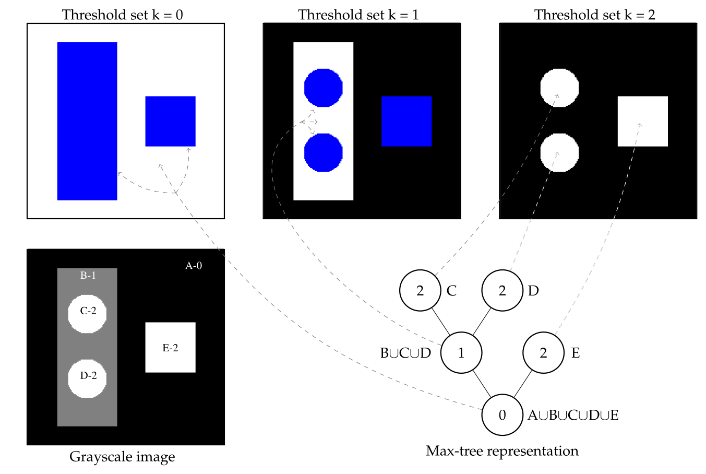
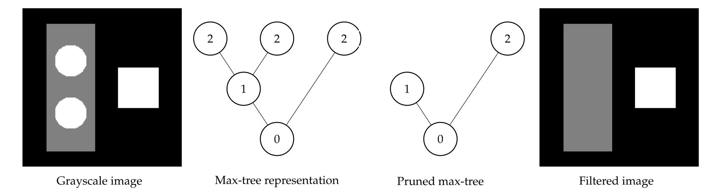
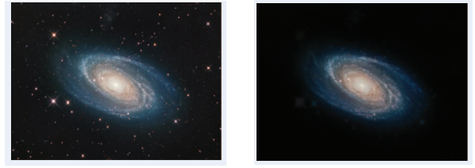
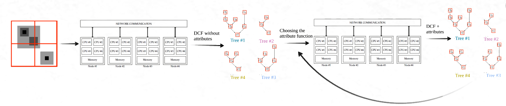
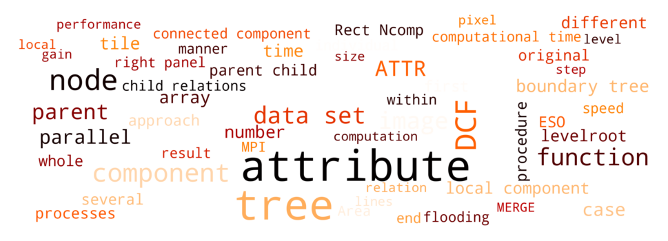
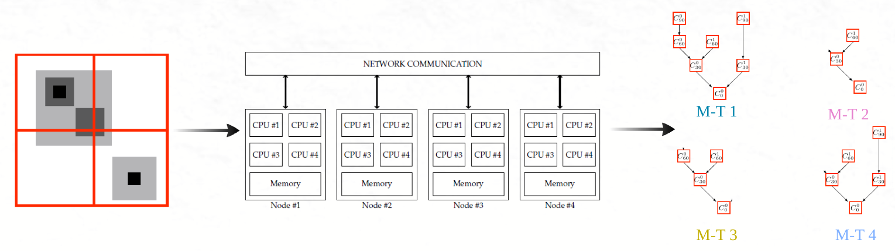

This page provides an overview of my research related to the development of a new Image Processing technique tool adapted for very large data sets. Once again, while the different sections below have been pre-written by myself, they were then fed into ChatGPT to make them more funky.
Intro to Connected Component Trees

Max-Tree representation (bottom right) of an image (bottom left) with 5 "flat zones". Imagine you have a beautiful puzzle made up of colorful puzzle pieces, and you want to understand how they fit together to form a complete picture. Now, imagine that each puzzle piece represents a region or object in an image, and you want to create a visual representation that shows how these regions are connected to each other. Well that's the idea behind component trees.
Hey there, people of the internet! And people of the mobile word. And people reading this from their toilet seats. Or most likely, people who got bored during my talk in whichever conference and decided to google my name. Let me present you an out-of-this-world introduction to the techniques of connected operators and component trees. Buckle up buddies, 'cause we're about to embark on a wild ride.
Picture this folks: You're staring at a digital image, and you're thinking, "Hey, what's going on with all these pixels? How can we make sense of this chaotic pixel party?" Well first, maybe consider drinking some water before you get your fifth vanilla vodka. Then, read about how connected operators come to the rescue. They're like these friends who stay after the party to help you clean. You value them a lot, and they never disappoint.
Connected operators are these cool people who examine pixels and their neighbors, searching for similarities and forming pixel groups, or as nobody call them, "Pixel Gangs". These gangs stick together, sharing common properties and forming groups within the image. It's like having a bunch of pixel pals who always have each other's backs.
And that's not it my little pandas from Guatemala, 'cause here comes the component trees, the ultimate boss-level technique to deal with Pixel Gangs. These bad boys take connected operators to a whole new level by creating a visual hierarchy, just like a family tree, but for pixels. It's like giving pixels a family reunion they'll never forget. And everyone loves family reunions right?
Anyway, component trees break down the image into smaller parts, revealing the intricate relationships between them. Now imaging watching a puzzle come together, piece by piece, until the bigger picture emerges. You'll see regions forming, objects connecting, and structures taking shape, all in one epic tree structure. Cool no? No? Hmmm, maybe you should consider putting some glitters in your world Kevin.
So, my fellow paprikas, connected operators and component trees are here to make your image analyses simpler. And yes Andrew, it means we can use them to remove your face from these old pictures you took on this island with people you said you never met, but this will probably cost you some money. Apart from this, they're also great tools to unlocking the mysteries hidden within images, turning pixel chaos into something you would not mind bringing home despite having demanding parents. So get ready to dive into a weird world where pixels become gangs and assemble into cool trees you can cut and dissect without feeling guilty about it.
Easy Image Manipulation

Filtering an image based on its tree representation is as simple as getting rid of the monarchy in France.
For object-based applications, component trees are like having a greek salad during the summer: I know there exist other options, but this one never disappoints. Component trees are simple structures, that can be easily manipulated, and filtering or analyzing them always feels like putting a knife in soft butter. Below are some examples.
From left to right: X-ray rendering of magnetic resonance angiogram; filtering result using component tree techniques able to extract connected structures; and detail of the extracted structure. Images generated using the MTDEMO program.

Left: spiral galaxy M81 (credit: Giovanni Benintende). Right: filtered result using k-flat connected filter approach (original paper here )
October 2021: Parallel Attribute Computation for Distributed Component Forests

To understand what is happening here, just imaging you just made a complicated lego. You now decide to make a different structure based on the same set of pieces you just used. Well the technique we propose enables you to build the new lego you want without having to start from scratch, you start from what you already built and just change the parts that need to be changed.
Do you like Legos? Well imagine building a magnificent Lego tower, but instead of regular Legos, we're talking about images and their amazing component trees. So, here's the big whoop: we've got this cool technique, and it's all about using component trees to filter stuff in images. Component trees are like the building blocks of image analysis (see above for the intro also). They help us see how different parts of an image are connected at different levels. It's like understanding how Lego bricks get together to create something complex.
Now, this technique takes it up a notch with parallel and distributed computing. It's like having a whole bunch of friends helping you build your Lego masterpiece. By splitting the data into smaller chunks and building component trees for each chunk at the same time, we can speed up the whole process. You end up building multiple Lego structures simultaneously, and you save enough time to share a cookie at the end.
But here's the really sweet part: with the technique proposed in the paper, we can calculate some statistics about the connected components without starting from scratch every time. It's like customizing your Lego creation with different themes without taking it apart. Well here we can switch between different statistics on the fly without re-building the whole component tree, and that's more time saved to share another cookie.
Now Legos are fun, but this is even better. Do you want to know how many of your neighbors have a swimming pool you can use when they are away? Well you can download the Google map image and apply our method to it to figure it out. Apart from this, you can also use it in all sorts of fields, like biomedical imaging, remote sensing, or astronomy. And it might help us figuring some stuff about climate change, but in the meantime, finding out where is the closest pool is still a nice option.
The Word Cloud summarizing most-used words in both papers.

March 2021: Distributed Connected Component Filtering and Analysis in 2D and 3D Tera-Scale Data Sets + March 2019: Distributed Component Forests in 2-D: Hierarchical Image Representations Suitable for Tera-Scale Images

Imaging you have a book, a good one, like The Little Prince. Now you take this book, cut it in 4, and ask 4 people to read each chunk you just cut. Then these people, they talk to each other, to fill in the information they are missing. But importantly, they only share the information they actually need to understand their chunk of the book. Well that's the idea we developed to efficiently analyze structures and objects in large 2D or 3D data sets. It's called DISCCOFAN, and it comes with a song.
Yo, listen up, I got a story to tell
'Bout images so big, they're a mighty swell
When they get complex, it's a real tough fight
But fear not, we got a trick, it's called component trees, alright?
Now these trees, they're hierarchical, you see
They represent scales, like a visual key
But as images grow, they become a real pain
Hard to store, hard to process, a big ol' strain
But hold up, there's hope, a new technique in town
It's called DISCCOFAN, let me break it down
We slice the image in tiles, divide and conquer, we say
Building local trees in parallel, paving our way
No need for a single tree, computationally costly and rare
With DCF, we process big data with care
In astronomy, remote sensing, or medical land
This efficient approach, it's truly grand
Now check out this picture, a simple example we'll view
Tiles, trees, correction, it's all we gotta do
Structures spanning tiles, they need some love
Sharing missing info, like a hand in a glove
With distributed-memory communication, we exchange the goods
Optimized, no overload, just like we should
At the end of the process, the trees stand tall
Updated, corrected, ready to answer the call
So remember, my friend, when images get wild
Component trees and DISCCOFAN will make you smile
Efficient, powerful, reducing the load
In this big ol' world of images, we'll hit the road!
The Word Cloud summarizing most-used words in both papers.